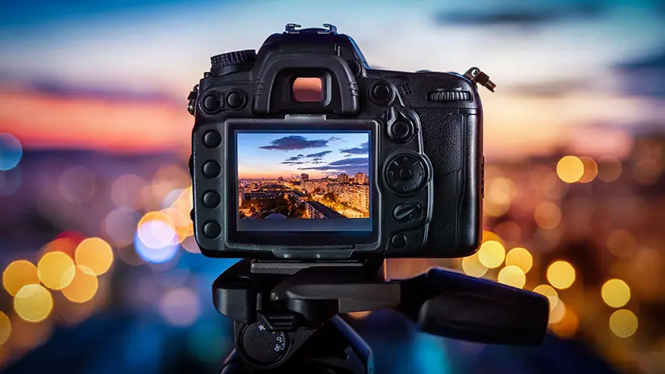

All about photography!

What is photography?
Photography is the art and process of making pictures by letting light hit a special film or a digital chip inside a camera.
Photography has many uses. Some use it for business, while others use it as an expression of their perspective on the world.
What are the different types of photography?
There are many different types of photography, but a few examples include:
- Portrait photography
- Landscape photography
- Street photography
- Wildlife photography
- Product photography
They all have their own purpose and style, but they all share the same fundamental idea: capturing light to create an image.
Here are some of the most common types of photography shown visually:
Information about Photography:
© 2026 Kasen Saavedra. All rights reserved.